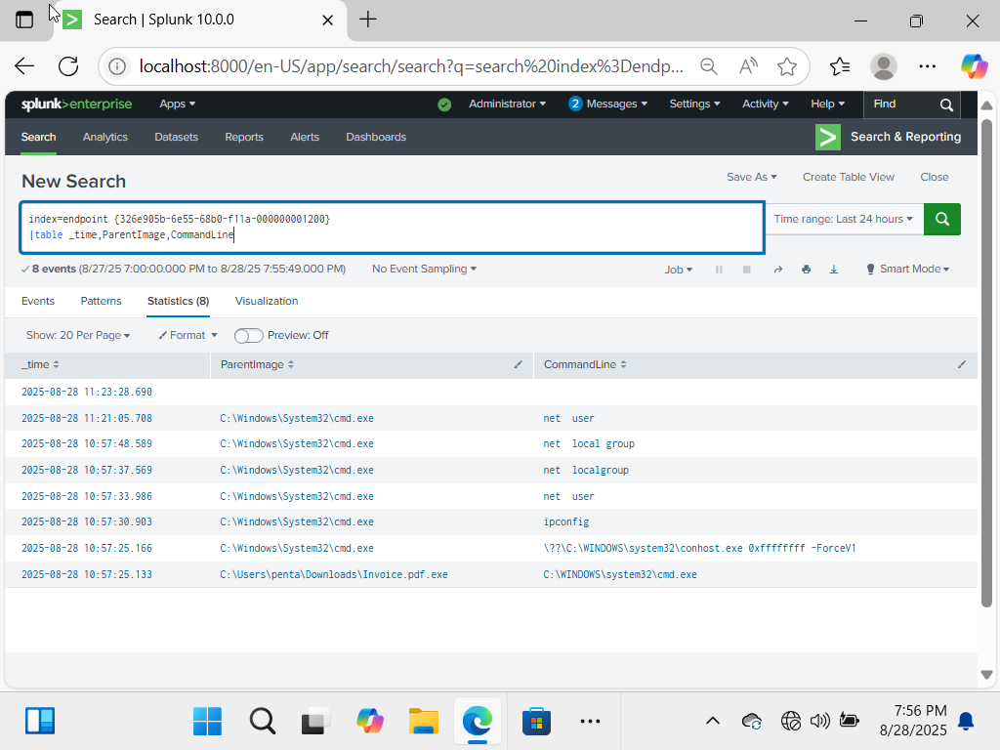
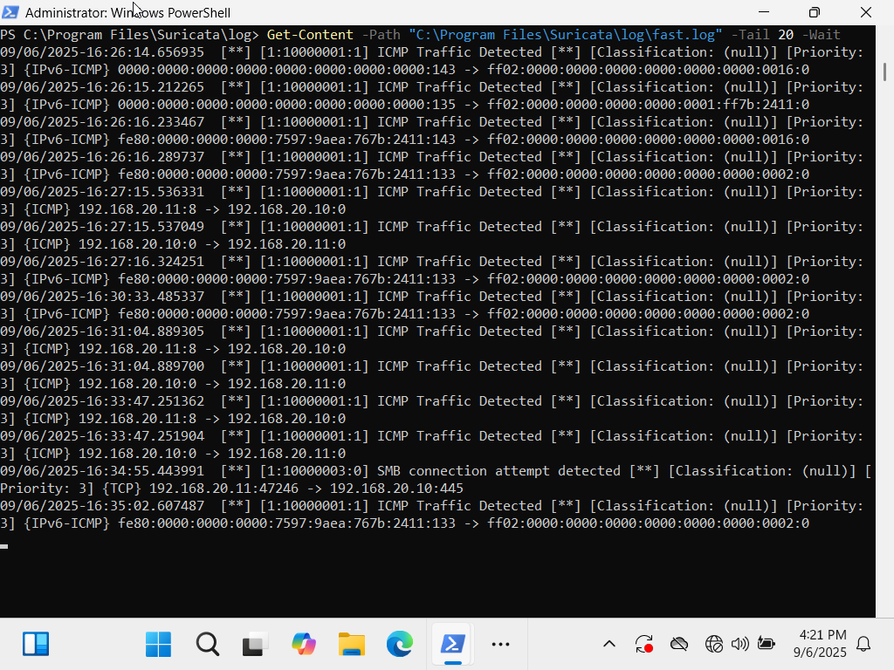
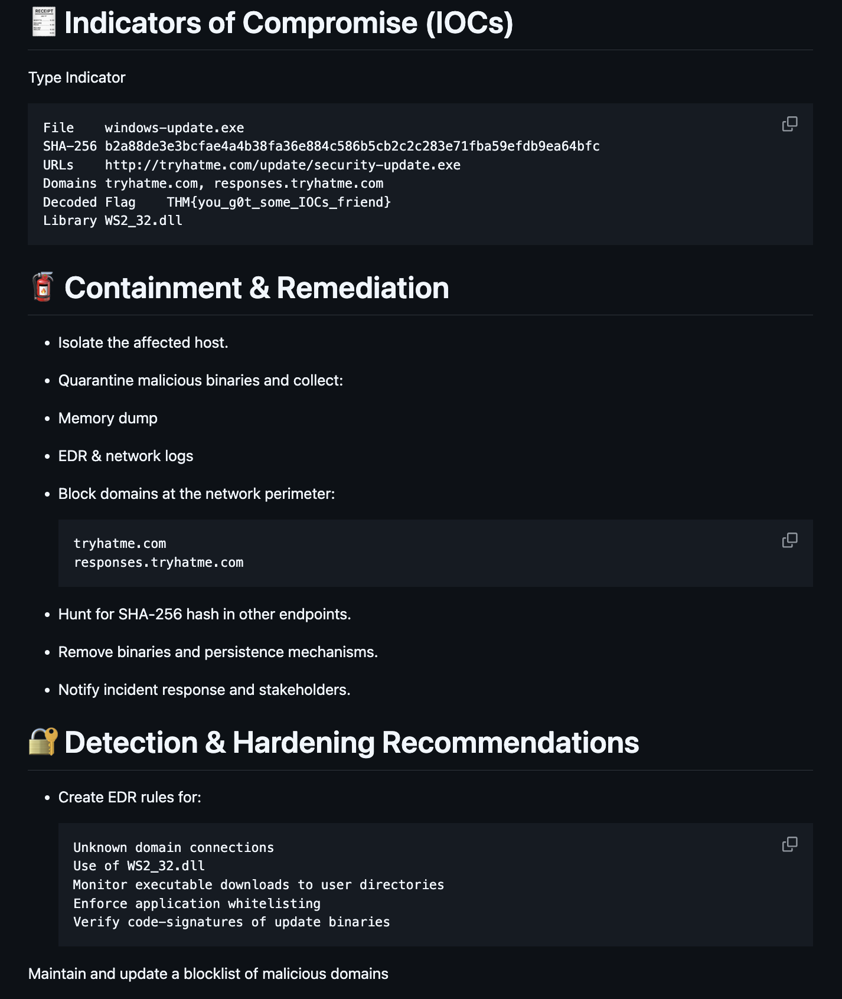
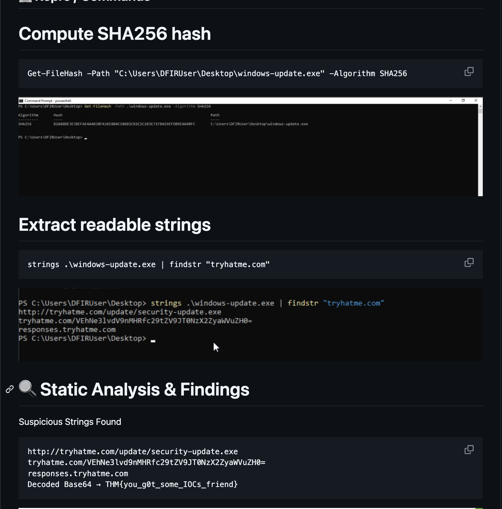

Victor Khattar
Security Analyst/Engineer
About
Analytical and detail-oriented cybersecurity professional with hands-on experience strengthening security operations, improving threat detection, and supporting incident response across diverse environments. Adept at conducting SIEM log analysis, investigating security alerts, analyzing malware and phishing activity, and applying endpoint detection and response (EDR) capabilities to identify and remediate threats. Demonstrated expertise in vulnerability management, IAM and access controls, Active Directory, Windows/Linux environments, and security automation, with a strong focus on improving operational efficiency and reducing analyst workload. Experienced in supporting disaster recovery and business continuity efforts and translating security findings into actionable remediation strategies. Holds multiple industry certifications, including CompTIA Security+, CySA+, SSCP, Google Cybersecurity, AWS Security IAM, and ITIL 4, with a Top 1% global ranking on TryHackMe.
🏆 Top 1% globally on TryHackMe | B.S. in Cybersecurity and Information Assurance at Western Governors University
Experience
Security Analyst II
Investigated, triaged, and remediated security incidents across enterprise SIEM, SOAR, and EDR platforms, including Splunk Enterprise Security, Splunk SOAR, Microsoft Sentinel, Microsoft Defender XDR, Google SecOps, SentinelOne, and CrowdStrike Falcon. Performed advanced threat analysis, incident response, log analysis, threat hunting, and root cause investigations to identify malicious activity and support timely containment and remediation. Collaborated with clients and cross-functional teams to improve security monitoring, detection coverage, investigation processes, and overall SOC efficiency. Performed detection rule tuning and optimization across SIEM and EDR platforms to reduce false positives, alert volume, and analyst workload while improving detection fidelity. Investigated and resolved escalated incidents affecting backup and disaster recovery environments, performing incident triage, log analysis, and root cause investigations to support data integrity, system availability, and operational continuity.
- Investigated and remediated security incidents using Splunk, Microsoft Sentinel, Microsoft Defender XDR, Google SecOps, SentinelOne and CrowdStrike Falcon.
- Investigated and remediated security incidents using Splunk, Microsoft Sentinel, Microsoft Defender XDR, Google SecOps, SentinelOne and CrowdStrike Falcon.
- Performed threat analysis, threat hunting, incident response, log analysis, and root cause investigations to support containment and remediation.
- Tuned SIEM/EDR detection rules to reduce false positives and alert volume while improving detection accuracy and response efficiency.
- Developed malware detection and security automation workflows to streamline investigations and reduce manual analyst workload.
BCDR/EDR Technical Support Engineer
Investigated and resolved escalated incidents affecting backup and disaster recovery environments, supporting data integrity and system availability. Performed incident triage, log analysis, and root cause investigations to identify underlying issues and support timely resolution while applying security-focused troubleshooting and incident response practices.
- Investigated and resolved escalated incidents affecting backup and disaster recovery systems, ensuring data integrity and operational continuity
- Performed incident triage, log analysis, and root cause investigations to identify underlying issues, determine remediation steps, and support timely incident resolution.
Security Researcher
Conducted independent security research focused on vulnerability analysis, emerging threats, malware behavior, endpoint security, and detection engineering. Researched attacker techniques and developed defensive approaches to improve threat detection, investigation, and response capabilities. Performed hands-on analysis of malicious activity, security controls, and detection gaps while documenting findings and developing practical defensive techniques.
- Conducted vulnerability and threat research to identify emerging attack techniques, security weaknesses, and potential detection gaps.
- Researched malware behavior, EDR security controls, and adversary techniques to understand attack patterns and develop defensive detection strategies.
- Published technical blogs and hands-on labs covering malware analysis, EDR bypass techniques, intrusion detection, and security research findings.
- Documented technical findings, methodologies, and remediation recommendations to support security awareness and improve defensive capabilities.
Help Desk Specialist
Provided technical support and troubleshooting for end users, Windows systems, applications, and security-related issues while maintaining secure and reliable IT operations.
- Administered Active Directory accounts, permissions, password resets, and group memberships.
- Troubleshot hardware, software, network, and endpoint issues to restore user productivity.
- Monitored and remediated endpoint security threats using Microsoft Defender, CrowdStrike Falcon, and SentinelOne.
- Investigated and resolved escalated technical and security incidents through ticketing and log analysis.
Projects & Labs
SOC/IR Home Lab

Built comprehensive attacker/defender environments to practice SIEM monitoring, incident response workflows, and escalation procedures.
Suricata IDS Deployment

Configured custom IDS rules, validated alerts, and analyzed logs for real-time threat detection in Windows home lab environment.
Security Automation Framework
Developed Python/PowerShell scripts to automate log parsing and anomaly detection, improving efficiency in threat identification.
AWS IAM CLI Project

Hands-on guide for managing AWS Identity and Access Management using CLI for creating, listing, attaching policies, and managing users and groups.
CTF Challenges & Writeups

Solved and documented scenarios involving privilege escalation, forensic investigations, network exploitation, and vulnerability analysis on TryHackMe platform.
SOC Triage Investiagation


This Project goes over the triage and analysis process, extraction of IOCs, and documents the use of PEStudio and PowerShell during the investigation.
Technical Skills
Security Operations
Incident Detection & Response, Threat Hunting, IOC Analysis, Escalation, Reporting,Penetration Testing, Log Analysis, DFIR, SOC Operations, BCDR
EDR & SIEM Tools
Splunk, CrowdStrike, MS Sentinel, Sentinel One, Suricata, Snort, Wireshark, Qualys, OpenVAS, VirusTotal, Nmap, Burp Suite, Metasploit
Cybersecurity Domains
IAM, Vulnerability Management, Malware Analysis, Phishing Defense, DR/BCP
Systems & Networking
Windows Server, Active Directory, Linux (Ubuntu/Kali), TCP/IP, DNS, DHCP, VPNs, Firewalls, IDS/IPS
Automation & Scripting
Python, PowerShell, Bash – log parsing, anomaly detection, security automation
Frameworks & Compliance
MITRE ATT&CK, OWASP Top 10, NIST CSF, ISO 27001, ISO 42001, PCI DSS, HIPAA, SOC2, GDPR
Certifications
Let's Connect
Interested in collaboration or have a security project? Reach out!